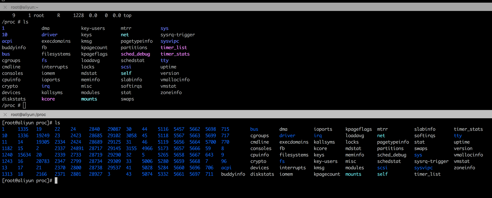

What Happen Pouchd
pouch 分为 客户端和服务端。服务端端启动 通过 pouchd 实现。可以使用如下参数：
参考：http://pouchcontainer.io/#/pouch/docs/commandline/pouchd.md
那么 pouchd 命令执行后，到底发生了什么呢？
pouchd 的启动开始于 main.go#runDaemon 函数。
第一步加载 deamonfile。deamonfile 来自于 pouchd 的参数。如果没有设置参数，deamonfile来自默认设置的参数。
loadDaemonFile(cfg, cmd.Flags())
第二步加载 logdriver。 opts.ParseLogOptions() 函数实现，默认使用 daemonfile 里的DefaultLogConfig josn-file。
第三步，判断如果是 pouchd version 的话，直接返回版本信息。 这一部分没有涉及到 网络 镜像信息。
第四步，设置 metric 信息。
metrics.EngineVersion.WithLabelValues(version.GitCommit).Set(1)
这里可以追溯到 apis/metrics/metrics.go 文件。 metrics.go 定义里一些 metrics，以提供 prometheus 采集。
第五步，打印启动日志信息。
第六步，验证 命令行里传输过来的信息是否符合规范。
第七步，如果开启了 debug 模式或者开启 EnableProfiler分析工具 的话，开启debug模式，并使用EnableProfiler工具 打印 trace 信息。
第八步，设置 homedir，默认是 /var/lib/pouch
第九步，保存至pidfile
将pouchd启动后的进程 pid 写入 /var/run/pouch.pid 内。（路径可以通过Pidfile参数设置）。
注意：.pid文件的原理作用：https://www.cnblogs.com/shijingjing07/p/6444191.html 使用 pid 文件的原因是保证 pouchd 进程只创建一个。再创建时根据 pid 文件 获取 pid 发现 pid进程已经存在。
第十步，设置 oom-score, 默认值 -500，可以通过 oom-score-adj 参数设置。
参考：https://www.sohu.com/a/238012686_467784
oom-scroe-adj 参数的作用：
oom-scroe oom-scroe-adj oom-adj 是出现 oom 情况下 杀死那个进程有关（哪个分数高，杀死哪个）。oom-score 范围 -1000～1000
oom_score_adj的取值范围是-1000～1000，0表示用户不调整oom_score，负值表示要在实际打分值上减去一个折扣，正值表示增加该进程的oom_score。
[root@aliyun 22595]# ls oom*
oom_adj oom_score oom_score_adj
[root@aliyun 22595]# cat oom_score
0
[root@aliyun 22595]# cat oom_adj
-8
[root@aliyun 22595]# cat oom_score_adj
-500
oom_adj是一个旧的接口参数，其功能类似oom_score_adj，为了兼容，目前仍然保留这个参数，当操作这个参数的时候，kernel实际上是会换算成oom_score_adj
第十一步：设置 quota 驱动类型。
pouch 有 grpquota、prjquota 两种不同的驱动类型。默认情况下，根据 linux 内核版本，如果 4版本以上的配置PrjQuotaDriver, 4以下的配用 grpquota、prjquota。
Disk quota磁盘配额技术是一种限制文件系统空间使用的技术。通过该技术限制其他用户在指定的容量范围内使用文件系统，从而防止个别用户过量使用而影响到其他的用户，quota技术是社区近来新实现的一种磁盘配额技术，它不再基于用户和组来划分空间，而基于project id实现，限额的粒度可以细到某个目录甚至单个文件，实现对文件系统空间布局进行控制。
第十二步：设置 lxcfs
默认情况下，没有开启 lxcfs, 通过 enable-lxcfs 开启 lxcfs, 开启了 lxcfs, 需要安装 lxcfs，并放于/usr/local/bin/lxcfs路径中（可通过lxcfs参数配置）
为什么使用 lxcfs？
我们知道容器的隔离是使用namespaces实现的，容器里运行的应用实际上是运行在宿主机上，只是pid不同、user、hostname、network、mount等不同罢了。本质上是同一个东西，在不同的地方看起来不一样。
例如，在容器内、宿主机运行
ls /proc看到的东西，基本是一样的（pid文件夹不一样）。这就导致了使用top命令采集到的信息是一样的。如图

LXCFS是基于FUSE实现而成的一套用户态文件系统，它通过用户态程序和内核FUSE模块交互完成。 LXCFS主要通过调用底层fuse的lib库libfuse和内核模块fuse交互实现成一个用户态的文件系统。
第十三步：初始化通道信号channel, 创建 pouch daemon。启动一个携程运行daemon。 通过 select 收集关闭 daemon 或者错误信息，然后退出。
todo: 详细介绍这里的多携程工作流程。 daemonset 的初始化启动，看下一篇介绍： what-does-daemon-do